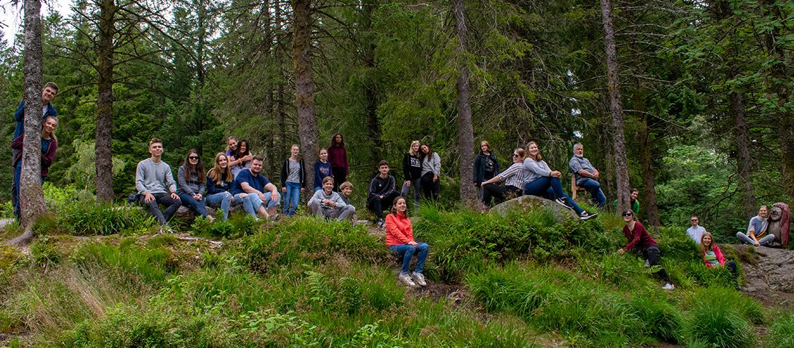
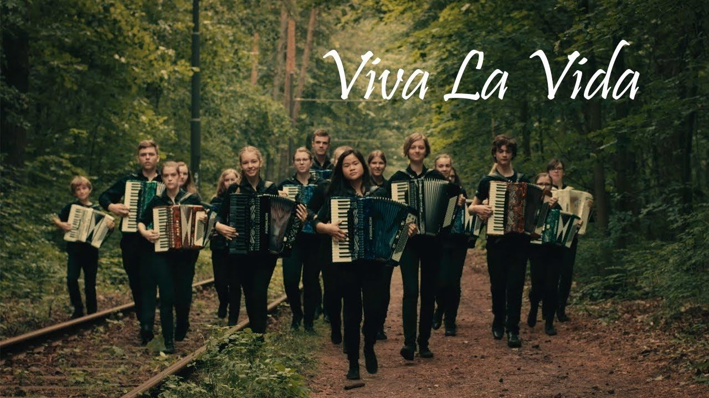
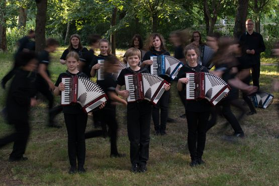
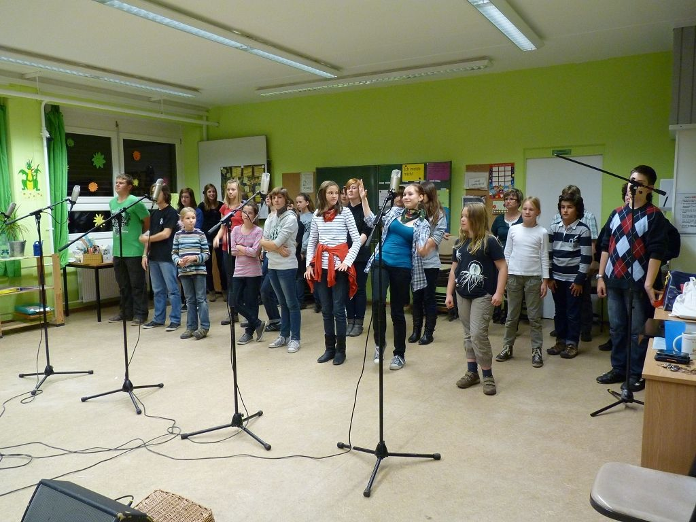
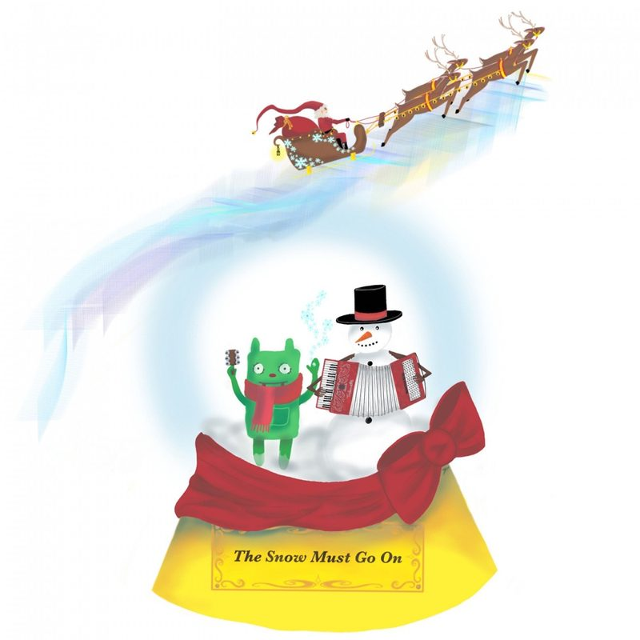

Die Tastonettis
Akkordeon-Orchester aus Berlin · Rock & Pop auf dem „Klavier to go“
Kurzbiografie
Die Tastonettis sind ein Akkordeon-Orchester aus Berlin: Rund 30 junge Musikerinnen und Musiker zwischen 9 und 21 Jahren spielen Rock- und Pop-Hits auf ihrem „Klavier to go“ – von ABBA über Coldplay bis AC/DC. Getragen wird das Orchester vom gemeinnützigen Freundeskreis Tastonettis e. V.
Biografie
Akkordeon der besonderen Art: Die Tastonettis holen das Akkordeon aus der verstaubten Volksmusikecke. Rund 30 Musikerinnen und Musiker im Alter von 9 bis 21 Jahren spielen auf ihrem „Klavier to go“ Titel aus Rock und Pop – begleitet von Schlagzeug und Bass-Akkordeon. Auf dem Notenpult stehen Robbie Williams, ABBA, Queen, Coldplay, Tina Turner, AC/DC oder Rammstein.
Seit 2011 steht der gemeinnützige Freundeskreis Tastonettis e. V. hinter dem Orchester. Eltern, Freunde und Fans organisieren Konzerte, Reisen und Veranstaltungen und machen so möglich, was das Orchester ausmacht: gemeinsam Musik machen, unterwegs sein und jede Menge Spaß haben.
Die Tastonettis haben bisher vier Tonträger veröffentlicht: das inzwischen ausverkaufte Debüt „Takt 26“, das Album „Klavier To Go“ (2017) mit 19 Titeln in einer Verpackung im Bausteinlook, die EP „Klavier To Go (Bonustracks)“ (2018) und die Weihnachts-EP „The Snow Must Go On“ (2019). Zu Weihnachten 2026 erscheint – nach sieben Jahren – eine neue CD. Das Musikvideo „Viva La Vida“ wurde auf YouTube rund 30.000-mal aufgerufen.
Live spielte das Orchester unter anderem auf dem WeihnachtsZauber Gendarmenmarkt, im BELANTIS Vergnügungspark Leipzig, im Zeiss-Großplanetarium, bei „Joko und Klaas“ (MTV Home), auf einer Sommertournee über die Insel Usedom und 2019 an Bord der AIDAsol auf ihrer Norwegen-Tour.
Fakten
- Name
- Die Tastonettis
- Besetzung
- Akkordeon-Orchester mit Schlagzeug und Bass-Akkordeon, ca. 30 Musikerinnen und Musiker
- Alter
- 9 bis 21 Jahre
- Herkunft
- Berlin
- Genre
- Rock, Pop & Unterhaltungsmusik auf dem Akkordeon
- Träger
- Freundeskreis Tastonettis e. V. (gegründet 2011, gemeinnützig)
- Veröffentlichungen
- 4 Tonträger, neue CD zu Weihnachten 2026
- Live
- bis 90 Minuten (2 × 45), 8 bis 40 Musiker
Highlights live
- WeihnachtsZauber Gendarmenmarkt, Berlin
- „Joko und Klaas“ (MTV Home)
- BELANTIS Vergnügungspark Leipzig
- Zeiss-Großplanetarium Berlin
- ALEXA Shopping Centre & Karstadt Kurfürstendamm
- Krongut Bornstedt, Potsdam
- Sommertournee Insel Usedom
- AIDAsol – Norwegen-Tour 2019
Alle Referenzen: tastonettis.de/buchung
Diskografie
- Neue CDWeihnachten 2026Titel und Tracklist noch geheim
 The Snow Must Go OnEP · 18.11.2019 · recordJet6 Titel, u. a. White Christmas, Merry Christmas Everyone
The Snow Must Go OnEP · 18.11.2019 · recordJet6 Titel, u. a. White Christmas, Merry Christmas Everyone Klavier To Go (Bonustracks)EP · 30.11.2018 · recordJet5 Titel, u. a. Sweet Dreams, Dancing Queen
Klavier To Go (Bonustracks)EP · 30.11.2018 · recordJet5 Titel, u. a. Sweet Dreams, Dancing Queen- Klavier To GoAlbum · 23.11.2017 · recordJet19 Titel, u. a. Viva La Vida, Highway To Hell, Engel
 Takt 26Debüt-Album · ausverkauft12 Titel, u. a. Tequila, Mamma Mia, Angels
Takt 26Debüt-Album · ausverkauft12 Titel, u. a. Tequila, Mamma Mia, Angels

Fotos zum Download
Die Fotos dürfen für die redaktionelle Berichterstattung über die Tastonettis honorarfrei verwendet werden.











Logo


Logofarbe: Rot #ed1c24
Auftritte
- Spieldauer bis zu 90 Minuten, in zwei Blöcken à 45 Minuten
- Besetzung von 8 bis 40 Musikern
- Instrumente und PA-Anlage mit Mikrofonierung bringen wir mit
Technik-Rider
Vom Veranstalter benötigt:
- Bühnenfläche ca. 9 m × 6 m
- Stromanschluss 230 V in unmittelbarer Bühnennähe
- Zufahrt so nah wie möglich zur Bühne und ein PKW-Stellplatz
Falls die Musikanlage gestellt wird:
- 4 – 5 Overheadmikrofone zur Abnahme des Akkordeonorchesters
- Drum-Mikrofonierung (Bass, Snare, 2 × Overhead)
- 1 Funkmikrofon (Sprache, Gesang)
- 1 Klinkeneingang für Bass-Akkordeon (Roland FR-2)
Presse & Booking
Für Interviews, Bildanfragen, Konzertbuchungen oder Rezensionsexemplare erreichen Sie uns per E-Mail.
E-Mail: tastonettis@gmail.com · Web: tastonettis.de